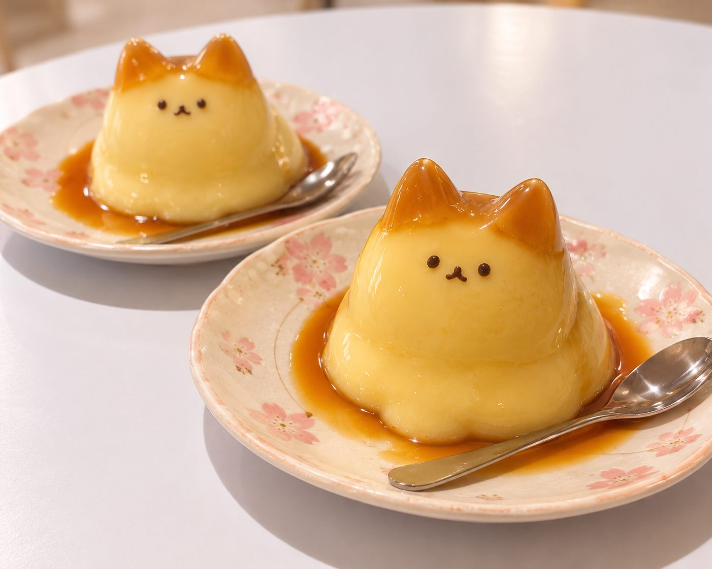
NUEVOTemporada Michi
ニャンコ
Edición limitada · noviembre – febrero
$24.000
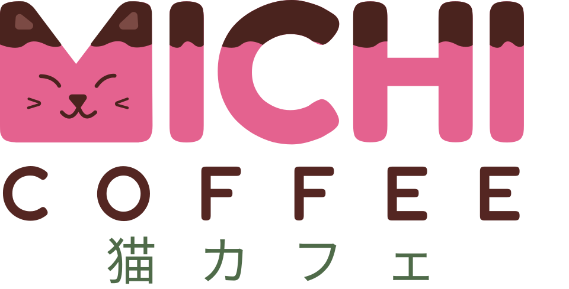
Un café de gatos en Cali con comida japonesa y michis en adopción.
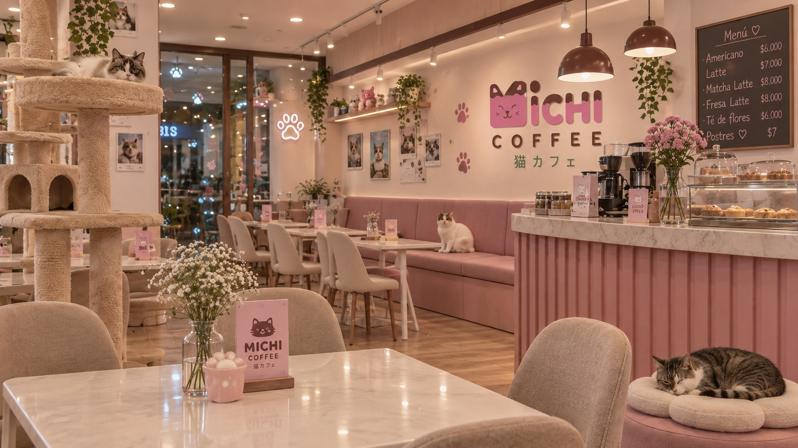
Somos un negocio en el cual queremos convertir cada visita en un momento especial. Nos inspiramos en la cultura japonesa para combinar deliciosos sabores, bebidas especiales y un ambiente lleno de encanto.
Creemos que la felicidad está en los pequeños detalles: un matcha bien preparado, un ramen calentito y un michi ronroneando a tu lado.
Por eso también somos un pequeño centro de adopción: los gatitos rescatados viven en nuestra sala de michis mientras encuentran un hogar para siempre.

NUEVOニャンコ
Edición limitada · noviembre – febrero
$24.000
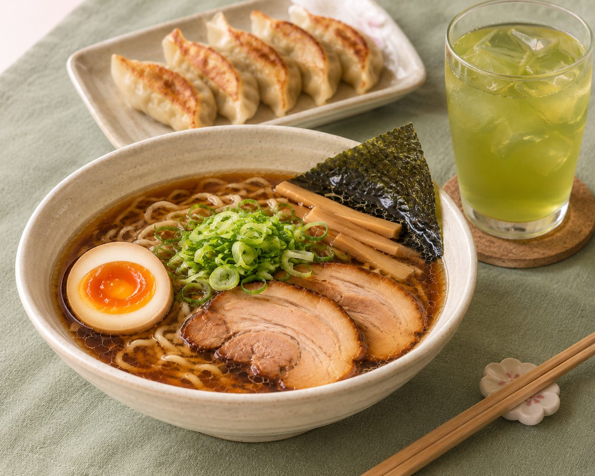
−30%ねこ弁当
Ramen shoyu + té verde frío + gyozas · Lun
$33.000
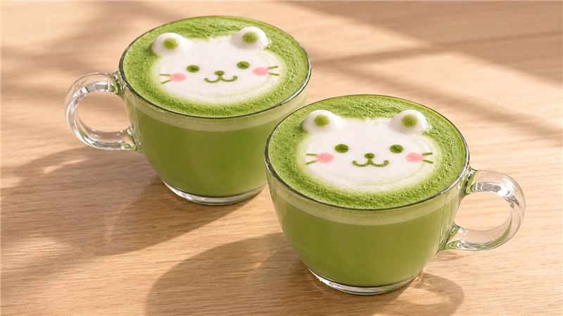
2x1抹茶
Todos los días · 15:00 – 18:00
$23.000
Estos gatitos rescatados viven en nuestra sala de michis mientras encuentran familia. Ven por un matcha, juega con ellos… y quizá te lleves a tu nuevo mejor amigo.
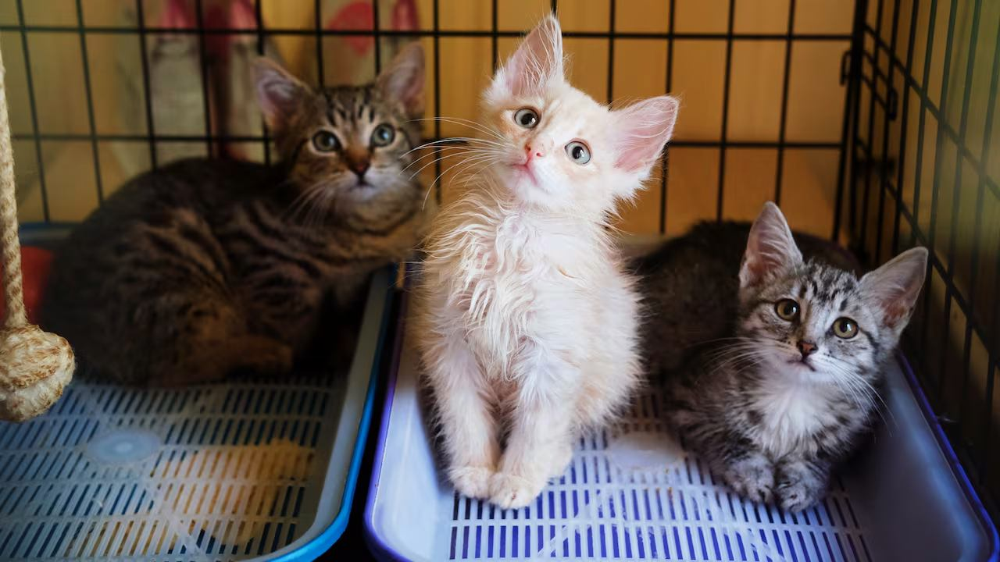
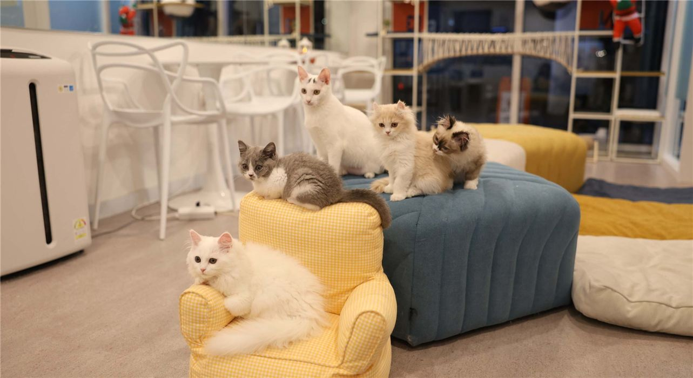
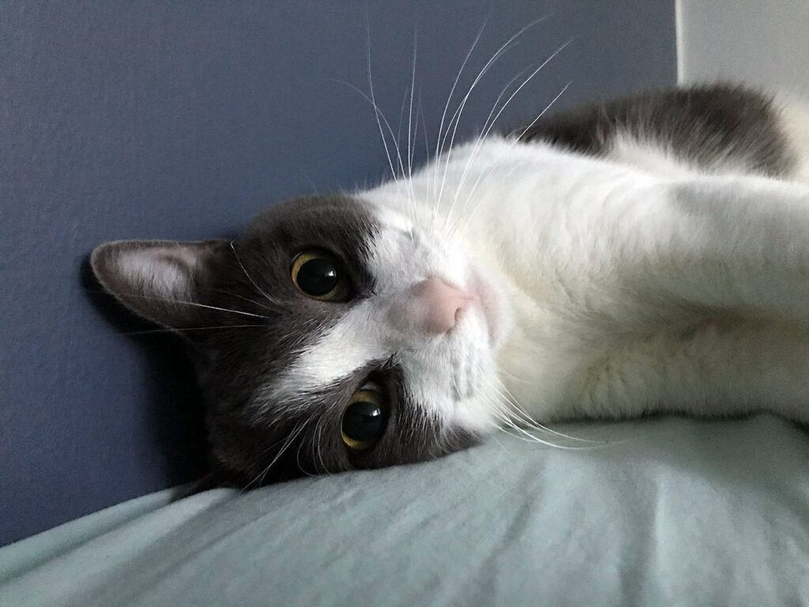
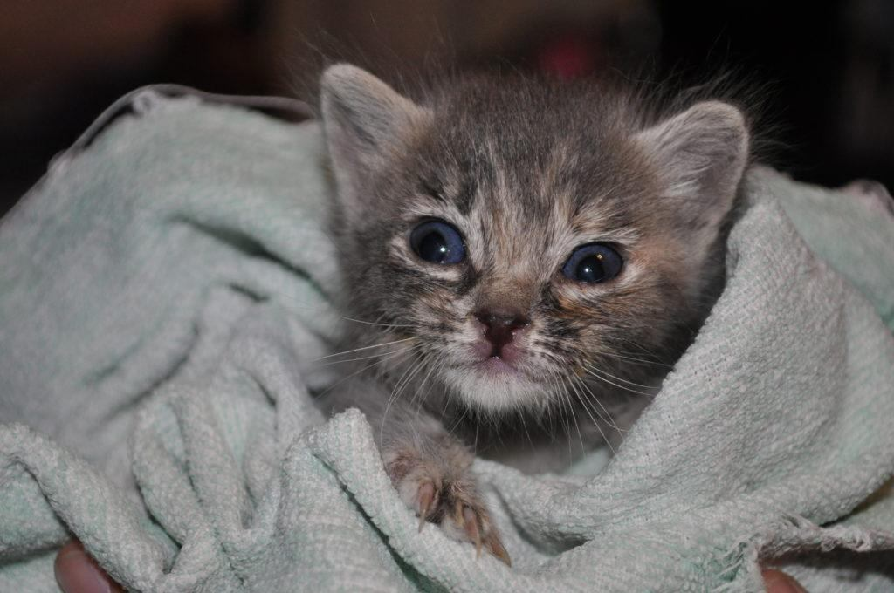
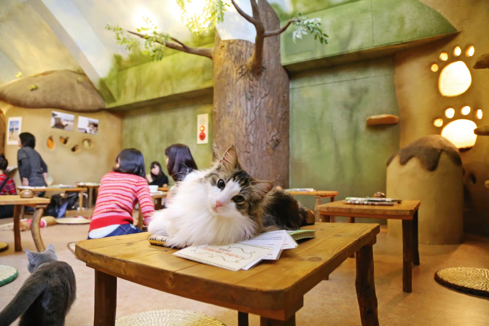
Visita la sala de michis y comparte un rato con ellos mientras disfrutas tu bebida.
Llena el formulario de adopción con nuestro equipo en el café.
Conversamos contigo para encontrar el michi ideal para tu hogar.
Tu michi se va contigo vacunado, esterilizado y con mucho amor.
¿Te enamoraste de un michi? Déjanos tus datos y te contactamos para agendar una visita a la sala de michis.
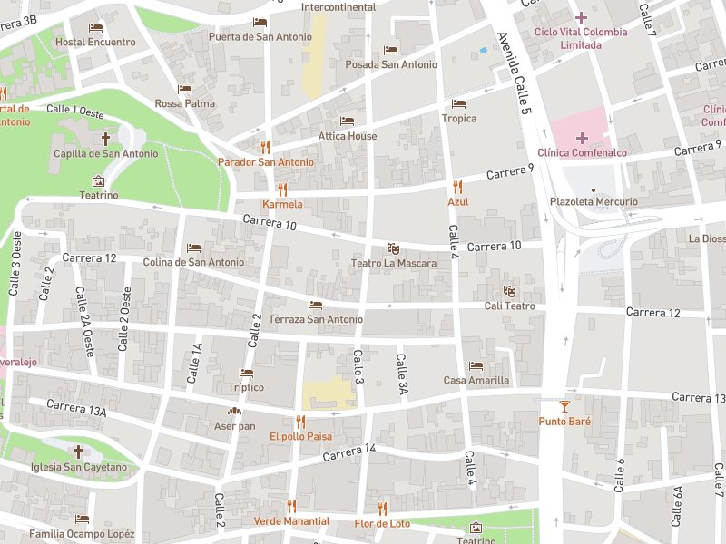
Abrir la ubicación en Google Maps (otra pestaña)